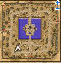
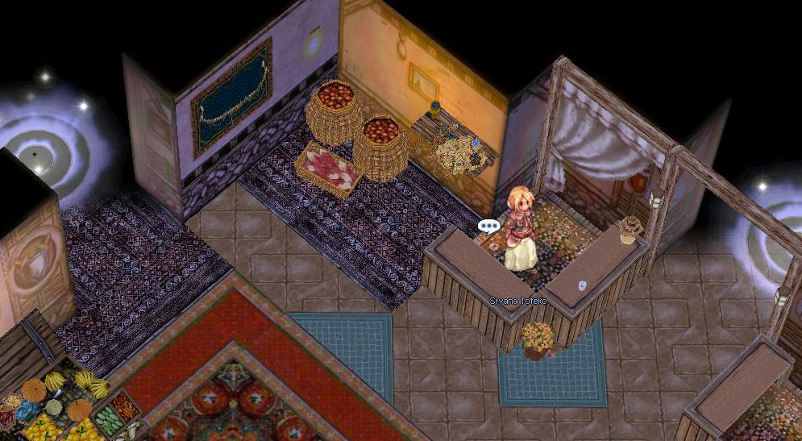
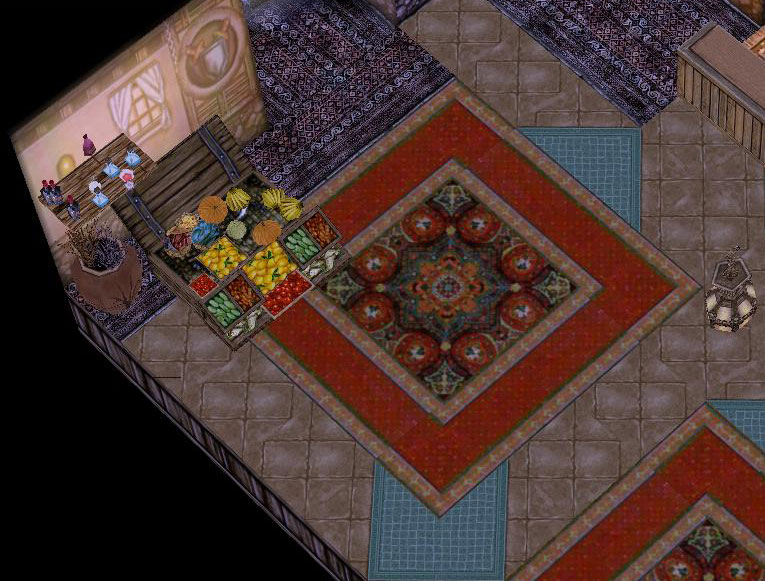
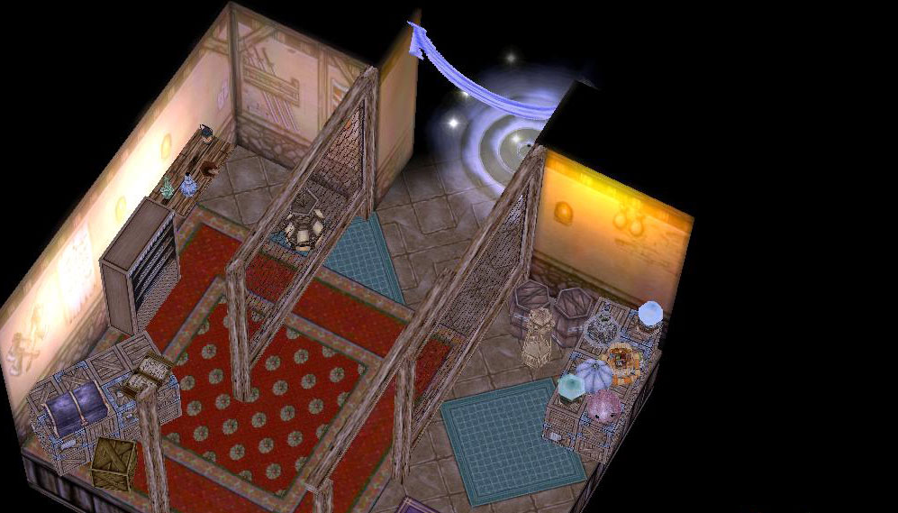
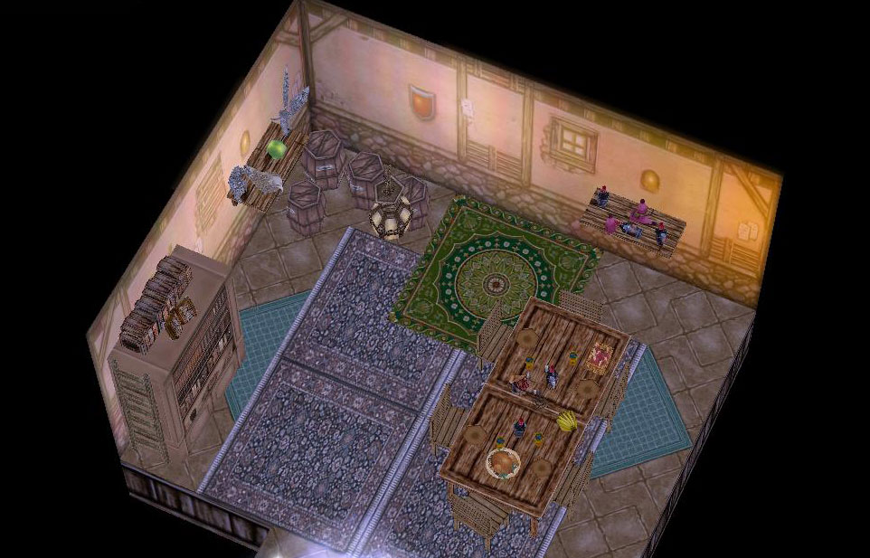

Par: Myllena
Description:L'épicerie Tofeko, située dans une maison de Morroc, propose à la fois des étalages d'objets divers à vendre (notamment de nombreux objets customs n'ayant aucun effet, mais qui sont ensuite demandés dans d'autres quêtes custom), mais également plusieurs dizaines de mini-quêtes accompagnées de récompenses. Ces mini-quêtes seront un pré-requis pour une quête plus complexe à venir. Un panneau d'informations a été ajouté dans Morroc pour situer l'épicerie.
Nota: Deux NPCs "classiques" (non custom) sont présents dans le lieu utilisé pour l'épicerie. Vous pouvez choisir de les déplacer ailleurs dans Morroc ou non. Il s'agit du NPC Marius présent dans quests_morocc (quête des binoculars) et du NPC Bankley de tu_sword (tutorial swordman).
Voici de nouveaux emplacements proposés pour les deux NPCs:
//Emplacement original : morocc_in,76,163,4 script Marius::bino 64,5,5,{
morocc_in,179,59,4 script Marius::bino 64,5,5,{
//Emplacement original: morocc_in,12,156,3 script Bankley 97,{
morocc_in,128,71,3 script Bankley 97,{
Nécessite l'ajout d'items custom (voir ci-dessous)
Nécessite l'emploi d'une map custom (voir ci-dessous)
Description étendue: La présence de ce script et de ses items customs (et de sa map custom) est absolument indispensable si vous souhaitez pouvoir profiter de la richesse des nouveaux objets proposés, qui interviennent dans la plupart des quêtes custom du Book Of Ymir. Outre les objets, des mini-quêtes sont disponibles auprès de l'épicière. Une fois l'intégralité des mini-quêtes accomplie, le joueur reçoit une récompense supplémentaire (item Neuralizer + expérience), ainsi que le grade de "super aventurier" (représenté par une variable). Ceci va permettre par la suite un accès à d'autres quêtes plus complexes, réservées uniquement aux grands aventuriers (câd aux joueurs possédant la variable en question). Vous pouvez tout à fait vous servir de ce pré-requis pour vos propres quêtes.
Les mini-quêtes possèdent toutes un thème, en lien direct avec une ville. La difficulté de ces mini-quêtes réside dans la compréhension de ce qui est demandé: les objets à rapporter ne sont pas toujours nommés clairement, c'est au joueur d'en deviner leur nature. Ces quêtes ne reposent donc pas sur la rareté des objets à rapporter, mais sur la patience que le joueur aura pour résoudre les énigmes que constituent les paroles de l'épicière. A noter que chaque mini-quête demande des objets différents, apporte une récompense différente, ainsi qu'un peu de Base Exp. A noter également que les mini-quêtes ne sont accessibles qu'à partir du niveau 60.
Ci-dessous une description qui était à la base destinée aux joueurs.
Morroc possède au détour de ses rues une célèbre épicerie fine, que nul joueur ne devrait ignorer. L'épicière Sryana Tofeko n'a pas la langue dans sa poche et dirige d'une main de fer (dans un gant de velours, ou l'inverse?) un commerce prospère... Dans son épicerie fine, vous trouverez évidemment de quoi vous sustenter, mais également des fruits et légumes plus exotiques, venant du monde entier. Si vous cherchez des Marshmallow ou des Noisettes, c'est l'endroit à visiter. L'épicerie Tofeko fait également commerce d'épice, d'herbes et de fleurs rares... Mais ce n'est pas tout! Sryana est en effet une grande collectionneuse, qui aime à se lier d'amitié avec des aventuriers et des explorateurs de tous horizons... Il paraît que son bric-à-brac ferait pâlir d'envie les trésors des Rois! Sryana Tofeko est aussi quelqu'un de fort instruit sous ses dehors de banale tenancière. Sa cuisine s'apparente plus à un établi d'alchimiste et elle a négocié de savants ouvrages à moult voyageurs... Si vous êtes un aventurier émérite, vous devez visiter l'épicerie Tofeko à Morroc! N'hésitez pas à rendre service à Sryana et à l'aider dans son commerce. Son amitié vous sera sans nul doute aussi précieuse que les trésors qu'elle vend...
Ceci est un message du Syndicat d'Initiative de Morroc, avec l'aimable financement de l'Epicerie Tofeko, l'épicerie où 'y a tout c'qu'il vous faut!
Si vous souhaitez utiliser ce script, une map custom doit être utilisée. Il s'agit de morocc_in, retouché par Miles, et disponible dans le répertoire maps_custom. L'intérieur de l'une des maisons a été modifié. Apperçu:





Si vous souhaitez utiliser ce script, un certain nombre d'items custom correspondants aux oeufs et appats doivent être ajoutés.
1. A ajouter dans item_db2.txt
//Epicerie Tofeko
20900,Collyre,Collyre,3,,10,0,,,,,,,,,,,,,{},{},{}
20901,Vernis_à_Griffes,Vernis à Griffes,3,,10,0,,,,,,,,,,,,,{},{},{}
20902,Seau_d'Eau,Seau d'Eau,3,,10,0,,,,,,,,,,,,,{},{},{}
20903,Orties,Orties,3,,10,0,,,,,,,,,,,,,{},{},{}
20904,Noisette,Noisette,3,,10,0,,,,,,,,,,,,,{},{},{}
20905,Tournesol,Tournesol,3,,10,0,,,,,,,,,,,,,{},{},{}
20906,Masque_Coloré,Masque Coloré,3,,10,0,,,,,,,,,,,,,{},{},{}
20907,Jouet,Jouet,3,,10,0,,,,,,,,,,,,,{},{},{}
20908,Brin_d'Herbe,Brin d'Herbe,3,,10,0,,,,,,,,,,,,,{},{},{}
20909,Tonnelet,Tonnelet,3,,10,0,,,,,,,,,,,,,{},{},{}
20911,Pain_Dur,Pain Dur,3,,10,0,,,,,,,,,,,,,{},{},{}
20912,Panier_en_Osier,Panier en Osier,3,,10,0,,,,,,,,,,,,,{},{},{}
20913,Feuilles,Feuilles,3,,10,0,,,,,,,,,,,,,{},{},{}
20914,Sac_à_Dos,Sac à Dos,3,,10,0,,,,,,,,,,,,,{},{},{}
20915,Sac_à_Dos,Sac à Dos,3,,10,0,,,,,,,,,,,,,{},{},{}
20916,Manuel_de_la_Brute,Manuel de la Brute,3,,10,0,,,,,,,,,,,,,{},{},{}
20917,Eau_Sucrée,Eau Sucrée,3,,10,0,,,,,,,,,,,,,{},{},{}
20918,Racine,Racine,3,,10,0,,,,,,,,,,,,,{},{},{}
20919,Pot_à_Crayons,Pot à Crayons,3,,10,0,,,,,,,,,,,,,{},{},{}
20920,Poudre_de_Glace,Poudre de Glace,3,,10,0,,,,,,,,,,,,,{},{},{}
20921,Tournesol,Tournesol,3,,10,0,,,,,,,,,,,,,{},{},{}
20922,Conté,Conté,3,,10,0,,,,,,,,,,,,,{},{},{}
20923,Gros_Ruban,Gros Ruban,3,,10,0,,,,,,,,,,,,,{},{},{}
20924,Fermeture_Eclair,Fermeture Eclair,3,,10,0,,,,,,,,,,,,,{},{},{}
20927,Thermomètre_Cassé,Thermomètre Cassé,3,0,0,1,,,,,,,,,,,,,{},{},{}
20930,Cristal_Anti_Magie,Cristal Anti Magie,3,20,,0,,,,,,,,,,,,,{},{},{}
2. A ajouter dans num2itemdisplaynametable.txt (et idnum2itemdisplaynametable.txt)
//Epicerie Tofeko
20900#Collyre#
20901#Vernis_à_Griffes#
20902#Seau_d'Eau#
20903#Orties#
20904#Noisette#
20905#Tournesol#
20906#Masque_Coloré#
20907#Jouet#
20908#Brin_d'Herbe#
20909#Tonnelet#
20911#Pain_Dur#
20912#Panier_en_Osier#
20913#Feuilles#
20914#Sac_à_Dos#
20915#Sac_à_Dos#
20916#Manuel_de_la_Brute#
20917#Eau_Sucrée#
20918#Racine#
20919#Pot_à_Crayons#
20920#Poudre_de_Glace#
20921#Tournesol#
20922#Conté#
20923#Gros_Ruban#
20924#Fermeture_Eclair#
20927#Thermomètre_Cassé#
20930#Cristal_Anti_Magie#
3. A ajouter à num2itemdesctable.txt (et idnum2itemdesctable.txt)
#
20900#
Une bouteille de soin pour les yeux. Peut être utilisé pour traiter les affections superficielles de l'oeil. Convient aux animaux domestiques.
Sur l'étiquette vous lisez -Epicerie Tofeko, allée de l'Olivier, Morroc-
#
20901#
Une bouteille de Vernis à Griffes Triple Tenue, laque longue durée, ultra-brillance et soins. Convient aux animaux domestiques.
Sur l'étiquette vous lisez -Epicerie Tofeko, allée de l'Olivier, Morroc-
#
20902#
Un baquet rempli d'eau stagnante.
#
20903#
Un bouquet d'orties qu'il vaudrait mieux manipuler avec des gants.
#
20904#
Une belle noisette.
#
20905#
Une jolie fleur de tournesol.
#
20906#
Un masque coloré à l'expression plutôt effrayante.
#
20907#
Un jouet représentant un petit moulin. Les enfants s'amusent en soufflant dessus pour le faire tourner.
#
20908#
Un brin d'herbe tout ce qu'il y a de plus classique. Vous vous demandez si vous ne vous êtes pas fait arnaqué en l'achetant à cette épicière.
#
20909#
Un petit tonneau dont vous ignorez le contenu.
#
20911#
Du pain rassis.
#
20912#
Un panier en osier d'une taille si petite que vous vous demandez bien ce qu'on pourrait y faire rentrer.
#
20913#
Une feuille étonnamment élastique et résistante.
#
20914#
Un superbe cartable en cuir de petite taille.
#
20915#
Un superbe cartable en cuir de petite taille.
#
20916#
Un épais ouvrage destiné aux guerriers. En le feuilletant, vous remarquez qu'il est très illustré.
#
20917#
Une carafe contenant de l'eau sucrée.
#
20918#
Une simple racine.
#
20919#
Un joli pot à crayons contenant quelques feutres, un stylo plume, et une mine de graphite.
Sous le pot, une étiquette indique -Epicerie Tofeko, allée de l'Olivier, Morroc-
#
20920#
Un sachet de poudre de glace. A saupoudrer avec parcimonie afin de rafraîchir temporairement l'atmosphère. Ne pas utiliser dans des endroits confinés.
Sur l'étiquette vous lisez -Epicerie Tofeko, allée de l'Olivier, Morroc-
#
20921#
Une jolie fleur de tournesol.
#
20922#
Une belle part de conté fruité affiné 16 mois.
#
20923#
Un ruban rouge de taille XXXL.
#
20924#
Une simple fermeture éclair.
#
20927#
Un thermomètre en mauvais état.
^ffffff_^000000
#
20930#
Un crystal mythique capable de dissiper toutes les magies interdites. Une intuition vous murmure de le garder toujours sur vous.
^ffffff_^000000
#
5. A ajouter à num2itemresnametable.txt (et idnum2itemresnametable.txt)
20900#ÄÚÆþà#
20901#ÈÀåÇ°#
20902#½Ä¿ëÀ¯#
20903#¾²µð¾´Ç®#
20904#µµÅ丮#
20905#²É#
20906#°¡¸é#
20907#¹Ù¶÷°³ºñÀÇÄ®³¯#
20908#¾²µð¾´Ç®#
20909#¿õȲÁÖ#
20911#Ȥ#
20912#¼ÒÄí¸®#
20913#¾Ë·Î¿¡ÀÙ»ç±Í#
20914#Ã¥°¡¹æ#
20915#Ã¥°¡¹æ#
20916#¾Ç¸¶¼Òȯ¼#
20917#½Ä¿ëÀ¯#
20918#½ÄÀμöÀǻѸ®#
20919#¿¬ÇʲÉÀÌ#
20920#¾óÀ½°¡·ç#
20921#²É#
20922#Ä¡Áî#
20923#¿Õ¸®º»#
20924#¿À¹¦ÇÑöÁ¶°¢#
20927#Ÿ¹ö¸°ºÎÇ°Á¶°¢#
20930#žç½ÅÀÇ»ó¡#